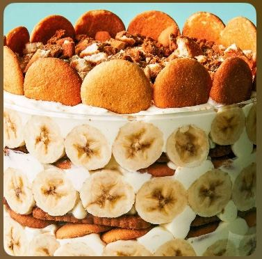

Dessert
Source: Food & Wine
Chef Kwame Onwuachi elevates a Southern favorite with Biscoff cookies, layers of fresh bananas, and rich vanilla cream for the ultimate crowd-pleasing dessert.
1 (5.1-ounce) package instant vanilla pudding and pie filling mix (such as Jell-O)
2 cups whole milk
1 quart heavy cream
½ cup powdered sugar (about 2 ounces)
1 (14-ounce) can sweetened condensed milk
1 tablespoon pure vanilla extract
1 (11-ounce) package vanilla wafers, divided
1 (8.8-ounce) package crisp gourmet cookies (such as Biscoff), divided
10 medium bananas, cut into ¼-inch-thick slices (about 10 cups), divided
Step 1: Beat pudding and pie filling mix and whole milk in a medium bowl with an electric mixer on low speed until combined and slightly thickened, about 2 minutes. Let stand at room temperature until soft-set, about 5 minutes.
Step 2: Beat together cream and powdered sugar in a large bowl with electric mixer on medium-high speed until stiff peaks form, about 5 minutes. Carefully fold in sweetened condensed milk, vanilla, and pudding mixture until just combined.
Step 3: In separate ziplock plastic bags, coarsely crush 5 vanilla wafers and 4 gourmet cookies; set aside for garnish. Reserve 16 of the remaining vanilla wafers.
Step 4: Arrange another 16 of the remaining vanilla wafers and 7 of the remaining gourmet cookies in a single layer in a 4½-quart trifle dish, alternating vanilla wafer and cookie rows, breaking as needed to fit dish. Place 2½ cups banana slices in an even layer on top of cookies. Spread 3 cups vanilla custard in an even layer over bananas. Repeat layering process 3 times with remaining vanilla wafers, gourmet cookies, banana slices, and vanilla custard. Sprinkle crushed cookies over top layer of custard. Insert reserved 16 vanilla wafers around edge of dish. Loosely cover with plastic wrap, and refrigerate at least 3 hours or up to 12 hours before serving.
Author: Kwame Onwuachi